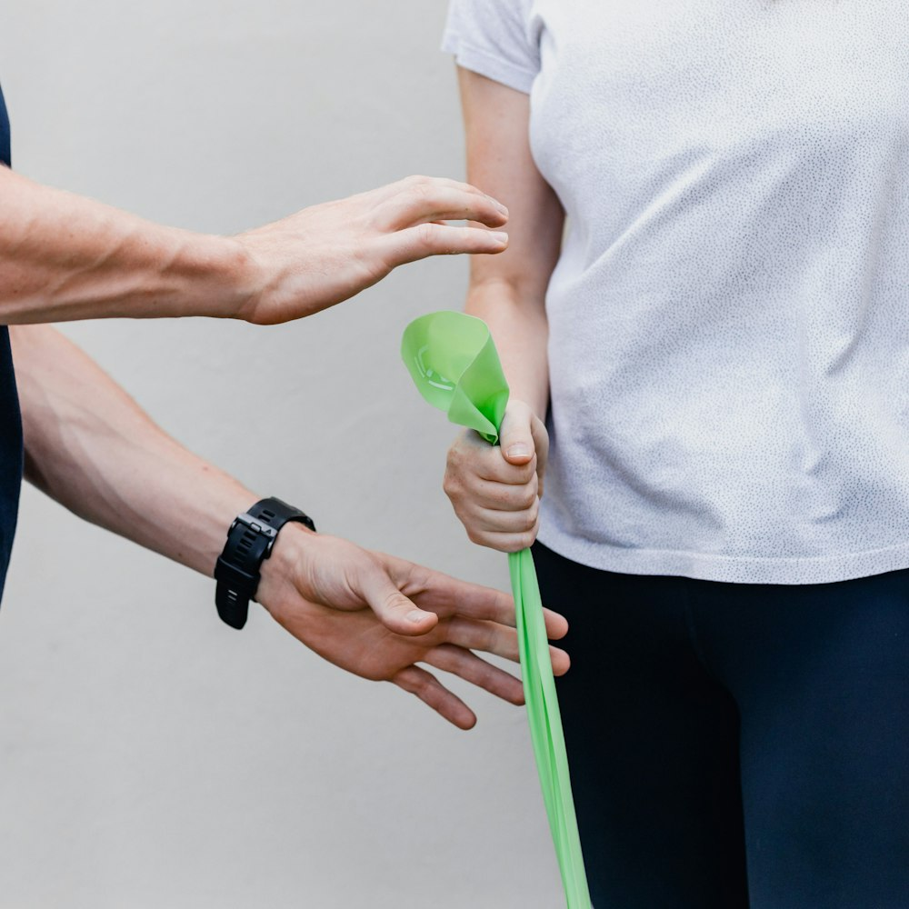
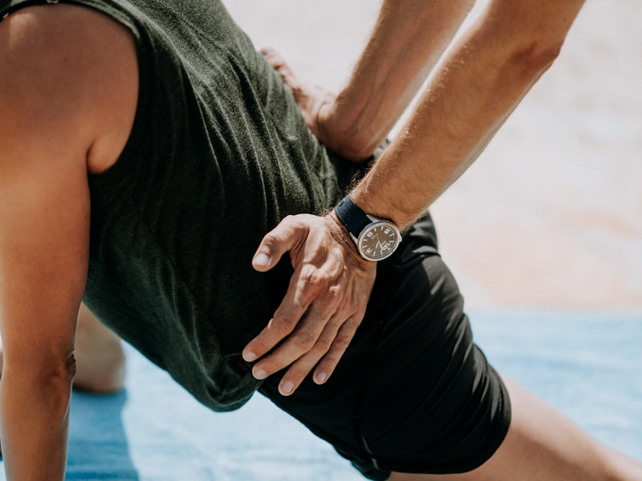
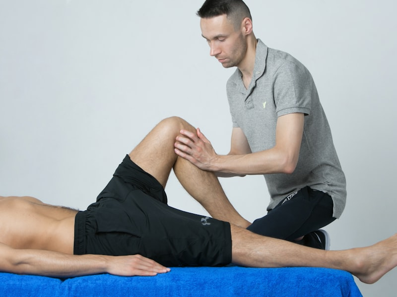
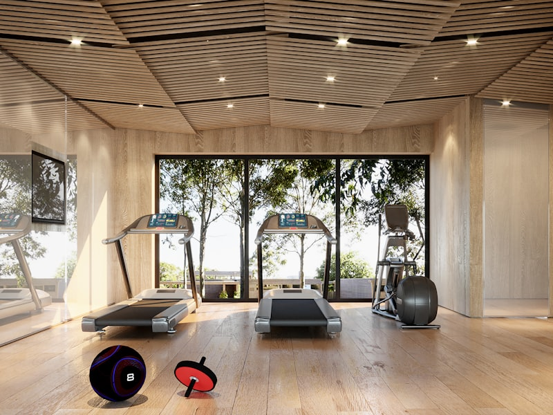

Nesttuntorget Fysioterapi & Manuellterapi
Vi er en fysioterapiklinikk sentralt plassert på Nesttuntorget i Bergen, med gode fasiliteter og enkel tilgjengelighet for alle våre pasienter.

Om oss
Nesttuntorget Fysioterapi & Manuellterapi er en veletablert klinikk med røtter tilbake til 1983, sentralt plassert på Nesttuntorget i Bergen. Gjennom mange år i lokalmiljøet har vi bygget bred erfaring med å hjelpe pasienter i alle aldre tilbake til bevegelse og hverdagen.
Hos oss møter du tre erfarne fysioterapeuter, alle med driftsavtale med Bergen kommune og HELFO. Det gir deg som pasient redusert egenandel og rett til frikort ved behov. Vi har bred kompetanse innen allmenn fysioterapi, lymfødembehandling og manuellterapi, i tillegg til et godt utstyrt treningsrom for veiledet trening og rehabilitering.
Slik finner du oss
Nesttun er et av Bergens beste kollektivknutepunkt, så det er enkelt å komme til oss.
I tillegg stopper flere busslinjer i umiddelbar nærhet. Kommer du med bil, finner du parkering i parkeringshuset ved Alti Nesttun (Østre Nesttunvei 16) mot betaling.
Se fullstendig adresse og kart på kontaktsiden vår.
Vi tilbyr
Allmenn fysioterapi
Undersøkelse, behandling og forebygging av skader og plager i muskel- og skjelettsystemet.
Lymfødembehandling
Spesialisert behandling og oppfølging for deg med lymfødem, tilpasset ditt forløp.
Manuellterapi
En spesialisering innen fysioterapi som legger vekt på undersøkelse, behandling og rehabilitering av muskel- og skjelettplager.
Treningsfasiliteter
Godt utstyrt treningsrom for veiledet og individuelt tilpasset trening.
Galleri


